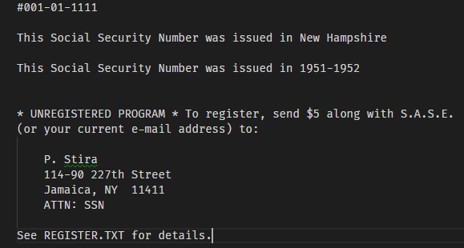
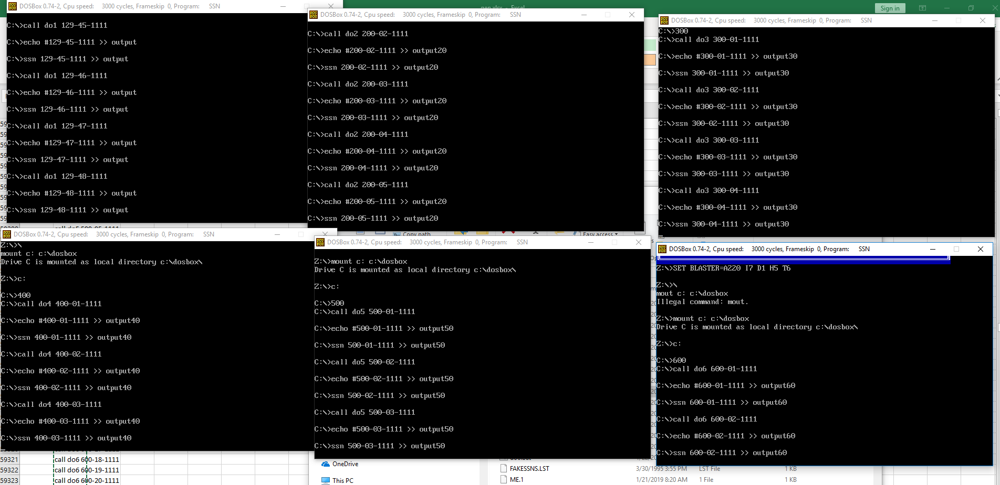
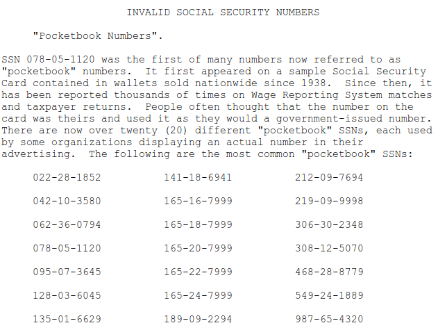

This tells more about the data shown on each of the SSN Block pages.
| Data | Detail |
|---|---|
| SSN10: |  This is a DOS Executable created around 1995 by Paul Stira - a convicted hacker. This program was available on BBS systems (what many used prior to the internet) and serves as a good example of what was known about Social Security Numbers in 1995. The program is shareware, and has approximately a 5 second delay after each check is run. Most modern computers, including windows 10x64 has trouble runninng this program, so if you want to run it, use a dosbox install. At Numchk, we ran 6 dosboxes (VM's) for about 100 hours of processing time to search the entire SSN space as it was easier than reverse engineering the program.  This data is surprisingly accurate for even what we have today compared to the SSDI (see below) and if someone wants a quick lookup, this is a nice program to use and parse the output. There are several articles about the Antics of Paul Stira (AKA Scorpion) and the small hacker crew MOD (Masters of Destruction). from the readme: ------- SSN v1.0 - Social Security Number Validator This program can determine if a Social Security Number is valid, and can determine the State where it was issued, and the year it was issued. Also, this program screens against "pocketbook" SSNs. These are known phoney Social Security Numbers that were once printed on identification cards as a sample number - and are not valid - nevertheless some unscrupulous individuals have misused these numbers in the past. Be advised that just because a Social Security Number passes the mathematical test, it does not mean the number is necessarily valid, or that it necessarily belongs to the individual claiming it. Social Security Numbers are constantly being issued, and recently-issued numbers may not be acknowledged by this program as being valid. All data contained within this program and all associated data files may not be without errors or omissions. The author makes no claims or representations as to the accuracy, usefulness, or fitness of this program or data for any particular purpose. This program is SHAREWARE. You are entitled to a two-week trial period after which you must either erase the program, or register it. For registration information, please see the file "REGISTER.TXT" ------------ The reference to Pocket Book SSN is very interesting. By 2007, a common list of these numbers is as follows:  002-28-1852 022-28-1852 042-10-3580 062-36-0749 most likely a mistake in most lists 062-36-0794 078-05-1120 most famous: 1938, wallet manufacturer the E. H. Ferree company secretary: Mrs. Hilda Schrader Whitcher - sold in Woolworth 095-07-3645 128-03-6045 135-01-6629 141-18-6941 165-16-7999 165-18-7999 165-20-7999 165-22-7999 165-24-7999 189-09-2294 212-09-7694 219-09-9998 most likely a mistake in most lists 219-09-9999 shown in a SSN marketing pamphlet in 1940 - and accidentally issued in 1962 in Provo Utah to a woman. 306-30-2348 308-12-5070 468-28-8779 549-24-1889 987-65-4320 987-65-4320 used in movies and advertising. invalid as area over 900 987-65-4321 used in movies and advertising. invalid as area over 900 987-65-4322 used in movies and advertising. invalid as area over 900 987-65-4323 used in movies and advertising. invalid as area over 900 987-65-4324 used in movies and advertising. invalid as area over 900 987-65-4325 used in movies and advertising. invalid as area over 900 987-65-4326 used in movies and advertising. invalid as area over 900 987-65-4327 used in movies and advertising. invalid as area over 900 987-65-4328 used in movies and advertising. invalid as area over 900 987-65-4329 used in movies and advertising. invalid as area over 900 |
| SSN10 State: | If Different than the standard web data, a state will be listed. There are several type-o's in P Stira's program in state names, those have been omitted from the results. In a few instances, His dataset shows dual state or alternate state assignment that is interesting. |
| SSN10 start Date: | The Start date SSN10 shows for when SSN's were first isssued in this block |
| SSN10 end Date: | The End date that SSN10 shows for when this block was fully issued. |
| Standard Web: | Many easily searched internet sites will return this data |
| VER. Start Date of issuing block: | standard web data |
| VER. End Date of issuing block: | standard web data |
| VER. Estimated Age of person with this number today: | estimated age as of 2018 for a person with a number in this block. this is an extremely rough number. prior to 1988 SSN's were issued around the time a person entered working age (~14 years of age) but a person could have been much older. it wasn't until 1988 that issuance at birth was required (or immigration) |
| VER. Issuing State prior to 2011: | The most likely state that issued th is number. States were no longer issued blocks in 2011, when Randomization started. numbers issued prior to 2011 can still be traced to a state of issuance. |
| SSDI |  Social Security Death Index - a national register at over 88 Million records. The dataset processed at NumChk was from 2013, 10GB (!) of text that a generous man from New Hampshire purchased (freedom of information act) to go on a political rant - Many thanks Tom! Many credit agencies use this data for fraud detection an pay $6,000K or more for access to a dataset that is updated around once per month with the full Name, Date of Birth, Date of death and Social Security Number of a person that has died. Up and till around 2009 this database also contained the zip code where the death occurred, but the dataset no longer has this data present. The important thing is that once someone has died with a SSN, the number is permenantly retired, never to be used again. if someone is using a number that is in this list, it is most likely a fraudulent use - so an easy thing to check. the NumChk team accessed this database from 2013 |
| SSDI Death count: | all records in a block are added up and this is how many records of deaths in this block. This gives an idea of your liklihood of pulling a number at random from this block and it being current or not. |
| SSDI Youngest Age: | What is the Youngest age of a person that died in this block. 0 will mean died at or near birth. |
| SSDI Average Age: | For Death records in this block, what is the average age at death. |
| SSDI Oldest Age: | What is the reported age (Death - Birth) of the oldest person in this block. |
| SSDI Average Birth Year: | after 1988, this starts to be very useful to help date when the block was started |
| SSDI Newest Birth Year: | What is the most recent year a number was assigned to this block (and a person died). |
| ..The exact age of the SSN Block... | It seems that the date between newest Birth and Oldest Death is very good at predicting what approximate date a block was used to issue SSN's in a particular state. The old way was to look at the list that was published by SSN at what was the last block used per year, but they stopped publishing this data some time ago. if anyone has access to it, please send a note to us a info@numchk.com |
| SSDI Oldest Death Year: | of Someone that died that had a SSN in this block, what is the oldest date on record. The reason this helps sandwich the block date is maybe right after someone got a SSN assigned they died. the first person in the block that had this happen helps set the lower bounds for when the record was used. |
| SSDI Average Death Year: | of people that have a SSN in this block, what year have they died on average. forces you to think a little about your own mortality. |
| SSDI Newest Death Year: | what is the most recent year a person in this block died? |
NumChk
info@numchk.com